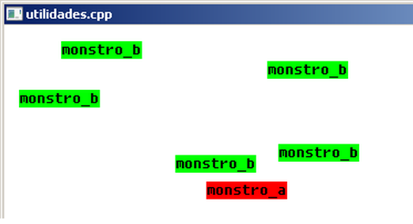

Neste capítulo nós vamos verificar algumas funções indispensáveis
da DarkGdk para compor um bom jogo. Uma destas funções é dbTimer()
que retorna o tempo decorrido em milessegundos. Geralmente você
vai usá-la para controlar a ocorrência de eventos em seu jogo
de acordo com a passagem do tempo, por exemplo, é comum em jogos
o surgimento de monstros e inimigos conforme certo tempo decorrido.
Vamos verificar também funções que geram números aleatórios que
geralmente são usadas para compor o elemento surpresa do jogo
tal como inimigos que surgem em tempos e espaços em intervalos
imprevisíveis.
01.2 Gerando números aleatórios
nValor = dbRnd(nLimite)
Esta função retorna um número aleatório dentro do limite
estabelecido por nLimite.
Exemplo:
xpos = dbRnd(640);
dbRandomize( nValor);
Esta função insere uma variação nos números aleatórios gerados.
Na ausência dela dbRnd() retorna sempre os mesmos valores.
O uso mais comum desta função é dada no exemplo abaixo:
dbRandomize( dbTimer() );
01.3 Controle de eventos em função do tempo
Com muita frequência você vai querer nos seus jogos fazer ocorrer
eventos em função da passagem do tempo. Por exemplo, o surgimento
de vários tipos de inimigos conforme o tempo decorrido do início
do jogo ou o tempo decorrido em relação ao surgimento anterior
do próprio inimigo.
Nesta situação de exemplo, cada inimigo precisa ser dotado de um
timer ou relógio temporizador para controlar o tempo decorrido
que vai surgir da diferença entre o tempo final e o tempo inicial
da contagem. O tempo final deve ser verificado a cada instante do
jogo e o tempo inicial vai ser reconfigurado depois de cada
surgimento do inimigo na tela. Possivelmente você vai precisar de
uma estrutura assim no seu código:
struct Relogio
{
int tmpInicial; // tempo inicial
int tmpFinal; // tempo final
int tmpDecorrido; // tempo decorrido
int gatilho; // gatilho de controle do disparo do evento
int limite; // Limite de monstros na tela
int qtd; // Quantidade de monstros na tela
};
Em cada ciclo do jogo você vai verificar o tempo decorrido e se este
tempo for igual ao tempo do gatilho pré-configurado você então dispara
o evento na tela chamando uma função. Em nosso programa exemplo
colocamos um monstro_a na tela a cada 500 milissegundos.
Exemplo do relógio do monstro_a criado com a estrutura acima:
// Configura relógio do monstro A
Relogio rel_ma; // Relógio do monstro_a
rel_ma.tmpInicial = dbTimer();
rel_ma.gatilho = 500;
rel_ma.tmpDecorrido = 0;
rel_ma.limite = 7;
rel_ma.qtd = 0;
O relógio acima é multifuncional, além de controlar o tempo ele
controla a quantidade e o limite de monstros colocados na tela.
Os monstros vão parar de aparecer quando a quantidade atingir o
limite estabelecido.
// Coloca monstro se gatilho de tempo foi atingido!
if (verifica_relogio(&rel_ma) == true) coloca_monstro(monstro_a);
A função verifica_relógio() verifica o relógio do monstro, verifica
o tempo decorrido e caso este tempo seja igual ao tempo do gatilho
ela retorna verdadeiro e na sequência a lógica do programa coloca
mais um monstro na tela com a função coloca_monstro().
A função verifica_relogio() retorna falso se a quantidade de monstros
atingiu a quantidade limite.
Veja abaixo o código desta função com os seus comentários:
bool verifica_relogio(Relogio *rel)
{
// Encerre aqui se a quantidade alcançou o limite
if (rel->qtd >= rel->limite)
{
return false;
} // endif
// Calcula tempo decorrido deltaTempo = tempoFinal - tempoInicial
rel->tmpFinal = dbTimer();
rel->tmpDecorrido = rel->tmpFinal - rel->tmpInicial;
// Avisa 'verdadeiro' se o tempo de gatilho foi atingido
if (rel->tmpDecorrido >= rel->gatilho)
{
rel->tmpInicial = dbTimer();
rel->qtd++;
return true;
} // endif
else
{
return false;
} // else
} // verifica_relogio().fim
A função coloca_monstro() é muito simples e faz o teste
da função dbRnd() colocando numa posição aleatória da
tela a legenda do monstro gerado:
void coloca_monstro(int monstro)
{
int xpos, ypos;
// Gera uma posição aleatório com dbRnd()
xpos = dbRnd(600);
ypos = dbRnd(460);
// Coloca monstro A
if (monstro == 1)
{
dbInk (nPreto, nVermelho);
dbText (xpos, ypos, "monstro_a");
}// endif
// Coloca monstro B
if (monstro == 2)
{
dbInk (nPreto, nVerde);
dbText (xpos, ypos, "monstro_b");
} // endif
} // coloca_monstro().fim
Veja agora o programa exemplo completo:

// utilidades.cpp
// Demonstra o uso de dbTimer(), dbRandomize() e dbRnd()
#include "DarkGDK.h"
// Relógio multifuncional do monstro
// Controla tempo de aparecimento do monstro e quantidade
struct Relogio
{
int tmpInicial; // tempo inicial
int tmpFinal; // tempo final
int tmpDecorrido; // tempo decorrido
int gatilho; // gatilho de controle do disparo do evento
int limite; // Limite de monstros na tela
int qtd; // Quantidade de monstros na tela
};
// Protótipo das funções
void initsys(); // inicializa o sistema
void utilidade(); // Testa funções úteis
void coloca_monstro(int monstro); // Coloca monstro na tela
bool verifica_relogio(Relogio *rel); // Verifica relogio do monstro
// Nossos monstrinhos imaginários
int monstro_a = 1;
int monstro_b = 2;
// Cores
const int nPreto = 0;
const int nBranco = 0xFFFFFF;
const int nAzul = 0x0000FF;
const int nVermelho = 0xFF0000;
const int nVerde = 0x00FF00;
// Relógios dos monstros a e b
Relogio rel_ma;
Relogio rel_mb;
// ----------------------------------------------------------------------------
void DarkGDK ( void ) {
// Começo da aplicação DarkGdk
initsys();
// Configura relógio do monstro A
rel_ma.tmpInicial = dbTimer();
rel_ma.gatilho = 500;
rel_ma.tmpDecorrido = 0;
rel_ma.limite = 7;
rel_ma.qtd = 0;
// Configura relógio do monstro B
rel_mb.tmpInicial = dbTimer();
rel_mb.gatilho = 800;
rel_mb.tmpDecorrido = 0;
rel_mb.limite = 12;
rel_mb.qtd = 0;
while ( LoopGDK ( ) ) {
utilidade();
dbSync ( );
} // fim do while
return;
} // fim da função: DarkGDK
// ----------------------------------------------------------------------------
void initsys() {
// Esta função inicializa o sistema
dbSyncOn( ); dbSyncRate (60);
dbCLS(nBranco);
dbSetWindowTitle("utilidades.cpp");
dbSetTextOpaque();
// Inicializa gerador de números aleatórios
dbRandomize( dbTimer() );
} // fim da função: initsys()
void utilidade() {
// Coloca monstro se gatilho de tempo foi atingido!
if (verifica_relogio(&rel_ma) == true)
coloca_monstro(monstro_a);
// Coloca monstro se gatilho de tempo foi atingido!
if (verifica_relogio(&rel_mb))
coloca_monstro(monstro_b);
} // utilidade().fim
void coloca_monstro(int monstro)
{
int xpos, ypos;
// Gera uma posição aleatório com dbRnd()
xpos = dbRnd(600);
ypos = dbRnd(460);
// Coloca monstro A
if (monstro == 1)
{
dbInk (nPreto, nVermelho);
dbText (xpos, ypos, "monstro_a");
}// endif
// Coloca monstro B
if (monstro == 2)
{
dbInk (nPreto, nVerde);
dbText (xpos, ypos, "monstro_b");
} // endif
} // coloca_monstro().fim
bool verifica_relogio(Relogio *rel)
{
// Encerre aqui se a quantidade alcançou o limite
if (rel->qtd >= rel->limite)
{
return false;
} // endif
// Calcula tempo decorrido deltaTempo = tempoFinal - tempoInicial
rel->tmpFinal = dbTimer();
rel->tmpDecorrido = rel->tmpFinal - rel->tmpInicial;
// Avisa 'verdadeiro' se o tempo de gatilho foi atingido
if (rel->tmpDecorrido >= rel->gatilho)
{
rel->tmpInicial = dbTimer();
rel->qtd++;
return true;
} // endif
else
{
return false;
} // else
} // verifica_relogio().fim